Filter phasor coordinates#
Apply threshold, median, Gaussian, and wavelet filters to phasor coordinates.
Filtering phasor coordinates improves signal quality by reducing noise while preserving relevant features. Common methods include thresholding, median, Gaussian, and wavelet-based filtering.
Import required modules and functions:
from phasorpy.datasets import fetch
from phasorpy.filter import (
phasor_filter_gaussian,
phasor_filter_median,
phasor_filter_pawflim,
phasor_threshold,
signal_filter_gaussian,
signal_filter_median,
)
from phasorpy.io import signal_from_imspector_tiff
from phasorpy.lifetime import phasor_calibrate
from phasorpy.phasor import phasor_from_signal
from phasorpy.plot import plot_image, plot_phasor
Calibrated phasor coordinates#
Read a time-correlated single photon counting (TCSPC) histogram from a file. A homogeneous solution of Fluorescein (4.2 ns) was imaged as a reference:
signal = signal_from_imspector_tiff(fetch('Embryo.tif'))
frequency = signal.attrs['frequency']
reference_signal = signal_from_imspector_tiff(fetch('Fluorescein_Embryo.tif'))
assert reference_signal.attrs['frequency'] == frequency
Calculate, calibrate, and plot the phasor coordinates:
mean, real, imag = phasor_from_signal(signal, axis=0)
reference = phasor_from_signal(reference_signal, axis=0)
real, imag = phasor_calibrate(
real, imag, *reference, frequency=frequency, lifetime=4.2
)
plot_phasor(
real, imag, frequency=frequency, title='Calibrated phasor coordinates'
)
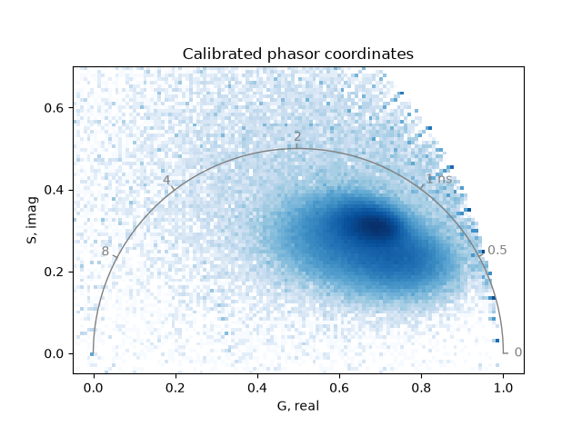
Threshold#
Thresholding with phasor_threshold() sets phasor
coordinates to NaN (not a number) wherever the mean intensity, real or
imaginary coordinates, phase or modulation fall outside specified bounds.
Such coordinates are excluded from plots and calculations. Thresholding is
typically performed after noise filtering.
Use a minimum mean intensity to remove background:
plot_phasor(
*phasor_threshold(mean, real, imag, mean_min=1)[1:],
frequency=frequency,
title='Thresholded phasor coordinates',
)
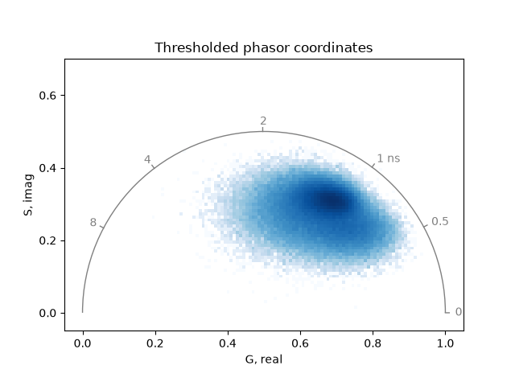
Median filter#
Median filtering replaces each pixel value with the median of its
neighboring values, reducing noise while preserving edges.
The function phasor_filter_median() applies a
median filter to phasor coordinates. Typically, applying a 3x3 kernel
once to three times is sufficient to remove noise while maintaining
important features:
mean_filtered, real_filtered, imag_filtered = phasor_filter_median(
mean, real, imag, repeat=3, size=3
)
Thresholds should be applied after noise filtering:
mean_filtered, real_filtered, imag_filtered = phasor_threshold(
mean_filtered, real_filtered, imag_filtered, mean_min=1
)
Plot the median-filtered and thresholded phasor coordinates:
plot_phasor(
real_filtered,
imag_filtered,
frequency=frequency,
title='Median-filtered phasor coordinates (3x3 kernel, 3 repetitions)',
)
Increasing the number of repetitions or the filter kernel size can further reduce noise, but may also remove relevant features:
mean_filtered, real_filtered, imag_filtered = phasor_threshold(
*phasor_filter_median(mean, real, imag, repeat=6, size=5), mean_min=1
)
plot_phasor(
real_filtered,
imag_filtered,
frequency=frequency,
title='Median-filtered phasor coordinates (5x5 kernel, 6 repetitions)',
)
The smoothing effect of median-filtering is demonstrated by plotting the real components of the filtered and unfiltered phasor coordinates as images:
plot_image(
phasor_threshold(mean, real, imag, mean_min=1)[1],
real_filtered,
vmin=0.4,
vmax=0.9,
labels=['Unfiltered', 'Median-filtered'],
title='Real component of phasor coordinates',
)
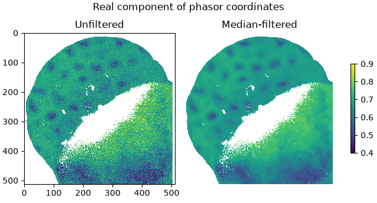
Note that the median filter is a non-linear operation applied directly to the normalized phasor coordinates. As a result, operations that combine median-filtered phasor coordinates using intensity weighting, such as computing the mean phasor of a region of interest, will give incorrect results.
For comparison, the function signal_filter_median()
applies a median filter to the signal before phasor transformation:
signal_filtered = signal_filter_median(signal, skip_axis=0, repeat=1, size=3)
mean, real, imag = phasor_from_signal(signal_filtered, axis=0)
real, imag = phasor_calibrate(
real, imag, *reference, frequency=frequency, lifetime=4.2
)
mean_filtered, real_filtered, imag_filtered = phasor_threshold(
mean, real, imag, mean_min=1
)
plot_phasor(
real_filtered,
imag_filtered,
frequency=frequency,
title='Phasor coordinates of median-filtered signal',
)
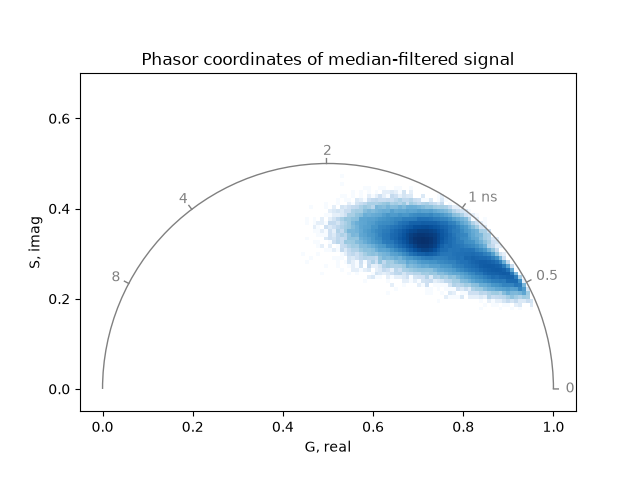
Note that the resulting phasor coordinates are displaced from the true
distribution. Signal-space filtering does not commute with the phasor
transform: for heterogeneous samples, the spatial median of neighboring
signals does not produce a physically meaningful signal.
Use phasor_filter_median() instead.
Gaussian filter#
Gaussian filtering replaces each pixel value with a weighted average of its
neighbors, where weights follow a Gaussian distribution.
Unlike median filtering, it is linear and smooths more gradually.
The function phasor_filter_gaussian() applies an
intensity-weighted Gaussian filter to phasor coordinates: each phasor
coordinate is weighted by the mean intensity before spatial averaging,
which is the physically correct approach for phasor analysis.
By default, a 3x3 kernel with sigma of about 0.8 is used:
mean, real, imag = phasor_from_signal(signal, axis=0)
real, imag = phasor_calibrate(
real, imag, *reference, frequency=frequency, lifetime=4.2
)
mean_filtered, real_filtered, imag_filtered = phasor_filter_gaussian(
mean, real, imag, repeat=3, size=3
)
mean_filtered, real_filtered, imag_filtered = phasor_threshold(
mean_filtered, real_filtered, imag_filtered, mean_min=1
)
plot_phasor(
real_filtered,
imag_filtered,
frequency=frequency,
title='Gaussian-filtered phasor coordinates (3x3 kernel, 3 repetitions)',
)
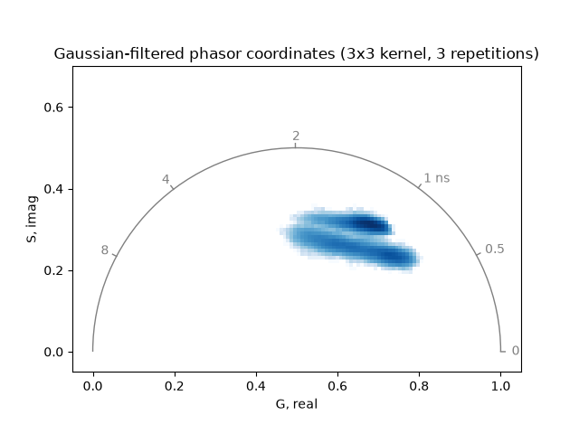
Increasing the number of repetitions or the kernel size can further reduce noise, but may also blur relevant features:
mean_filtered, real_filtered, imag_filtered = phasor_threshold(
*phasor_filter_gaussian(mean, real, imag, repeat=6, size=5), mean_min=1
)
plot_phasor(
real_filtered,
imag_filtered,
frequency=frequency,
title='Gaussian-filtered phasor coordinates (5x5 kernel, 6 repetitions)',
)
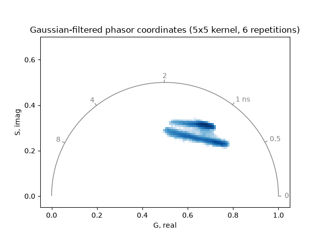
The smoothing effect of Gaussian filtering is demonstrated by plotting the real components of the filtered and unfiltered phasor coordinates as images:
plot_image(
phasor_threshold(mean, real, imag, mean_min=1)[1],
real_filtered,
vmin=0.4,
vmax=0.9,
labels=['Unfiltered', 'Gaussian-filtered'],
title='Real component of phasor coordinates',
)
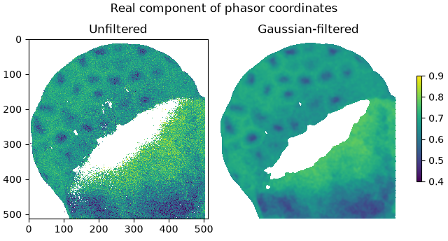
For comparison, the function
signal_filter_gaussian() applies a Gaussian filter
to the signal before phasor transformation:
signal_filtered = signal_filter_gaussian(signal, skip_axis=0, repeat=3, size=3)
mean, real, imag = phasor_from_signal(signal_filtered, axis=0)
real, imag = phasor_calibrate(
real, imag, *reference, frequency=frequency, lifetime=4.2
)
mean_filtered, real_filtered, imag_filtered = phasor_threshold(
mean, real, imag, mean_min=1
)
plot_phasor(
real_filtered,
imag_filtered,
frequency=frequency,
title='Phasor coordinates of Gaussian-filtered signal',
)
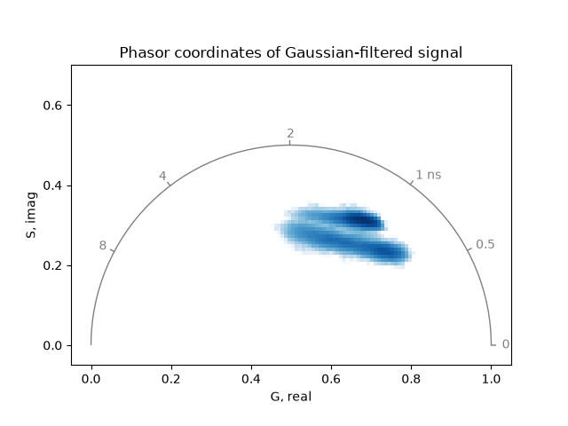
Unlike median filtering, Gaussian filtering is a linear operation that commutes with the phasor transform. Consequently, the phasor coordinates of the Gaussian-filtered signal are identical to those obtained by intensity-weighted filtering of the phasor coordinates directly.
pawFLIM wavelet filter#
Filtering based on wavelet decomposition is another method to reduce noise.
The function phasor_filter_pawflim() is based
on the pawFLIM library.
While the median filter is applicable to any type of phasor coordinates,
the pawFLIM filter requires calibrated phasor coordinates from FLIM
measurements and at least one harmonic and its corresponding second harmonic
(the 1st and 2nd harmonic in this example):
harmonic = [1, 2]
mean, real, imag = phasor_from_signal(signal, axis=0, harmonic=harmonic)
reference = phasor_from_signal(reference_signal, axis=0, harmonic=harmonic)
real, imag = phasor_calibrate(
real,
imag,
*reference,
frequency=frequency,
lifetime=4.2,
harmonic=harmonic,
)
Apply the pawFLIM wavelet filter to the calibrated phasor coordinates:
mean_filtered, real_filtered, imag_filtered = phasor_threshold(
*phasor_filter_pawflim(mean, real, imag, harmonic=harmonic), mean_min=1
)
Plot the pawFLIM-filtered and thresholded phasor coordinates:
plot_phasor(
real_filtered[0],
imag_filtered[0],
frequency=frequency,
title='pawFLIM-filtered phasor coordinates (sigma=2, levels=1)',
)
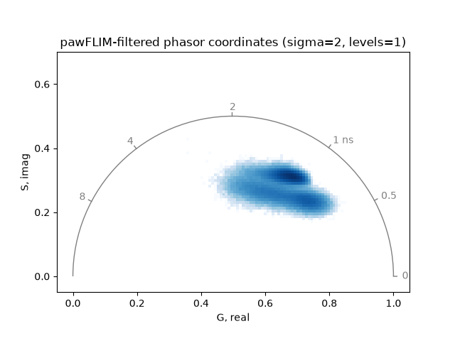
Increasing the significance level sigma of the comparison between
phasor coordinates or the maximum averaging area levels can reduce noise
further:
mean_filtered, real_filtered, imag_filtered = phasor_filter_pawflim(
mean, real, imag, harmonic=harmonic, sigma=5, levels=3
)
mean_filtered, real_filtered, imag_filtered = phasor_threshold(
mean_filtered, real_filtered, imag_filtered, mean_min=1
)
plot_phasor(
real_filtered[0],
imag_filtered[0],
frequency=frequency,
title='pawFLIM-filtered phasor coordinates (sigma=5, levels=3)',
)
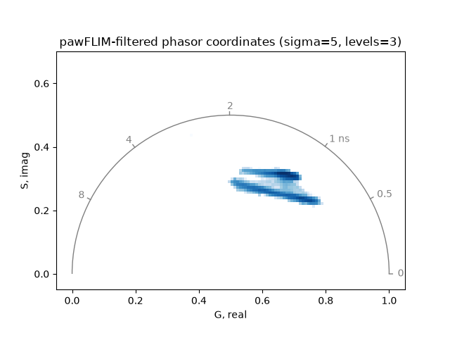
Plot the real components of the filtered and unfiltered phasor coordinates as images:
plot_image(
phasor_threshold(mean, real, imag, mean_min=1)[1],
real_filtered,
vmin=0.4,
vmax=0.9,
labels=['Unfiltered', 'pawFLIM-filtered'],
title='Real component of phasor coordinates',
)
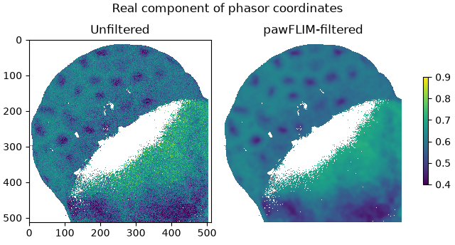
Total running time of the script: (0 minutes 7.475 seconds)